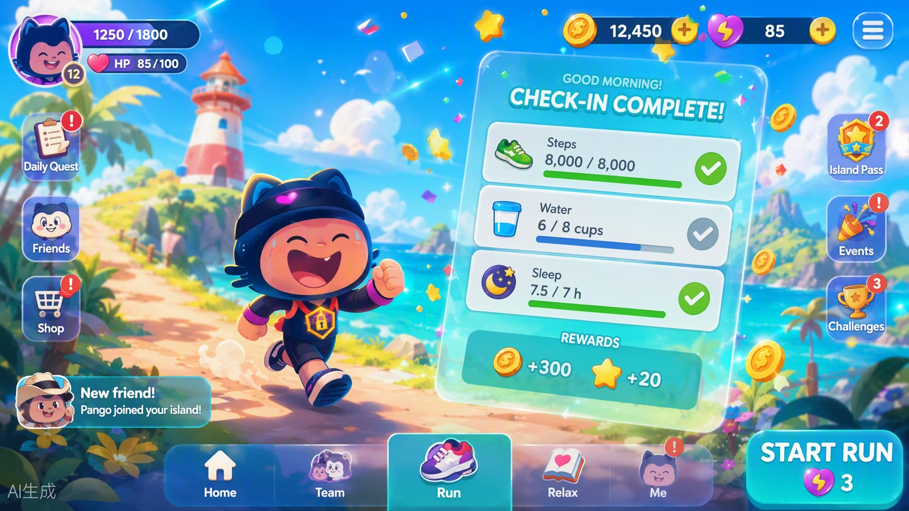
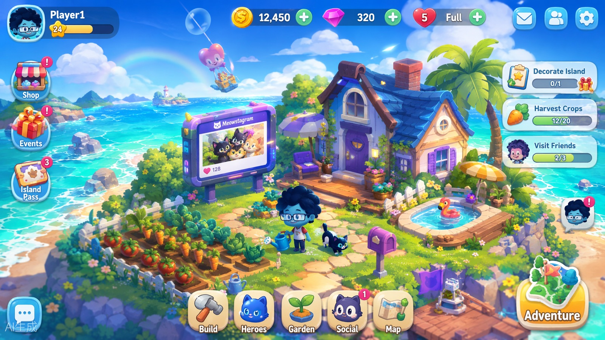
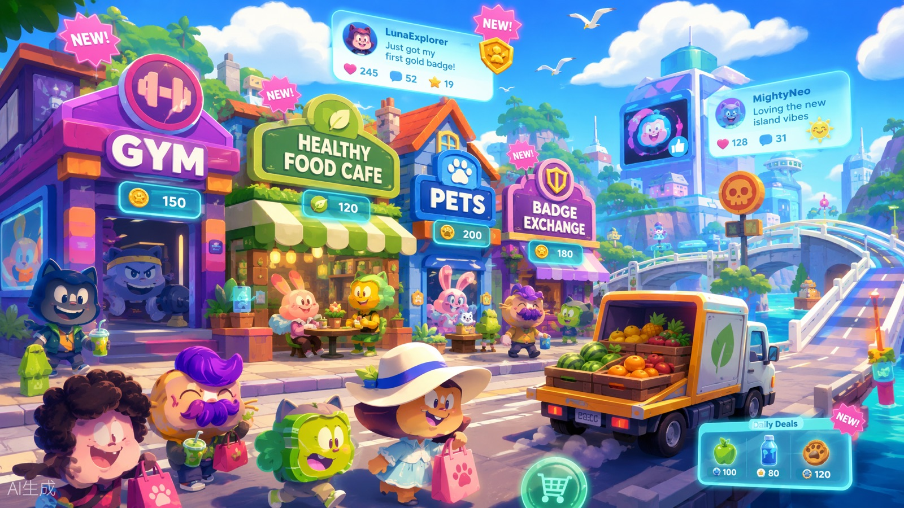
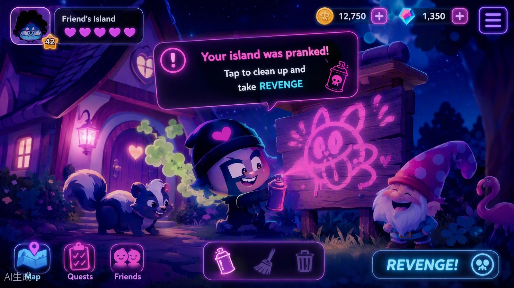
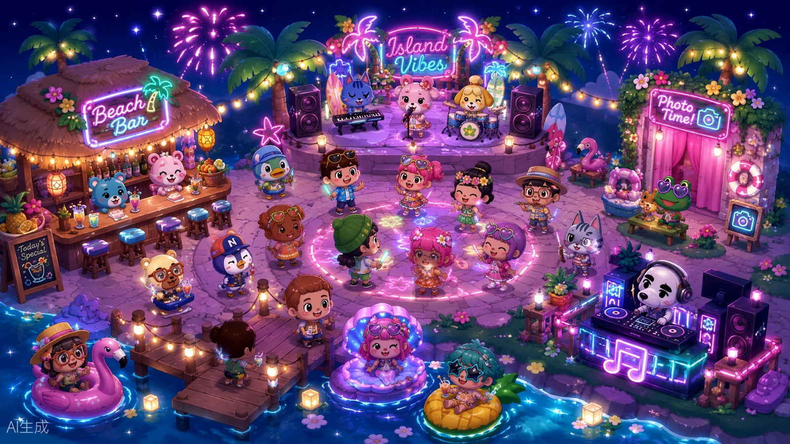
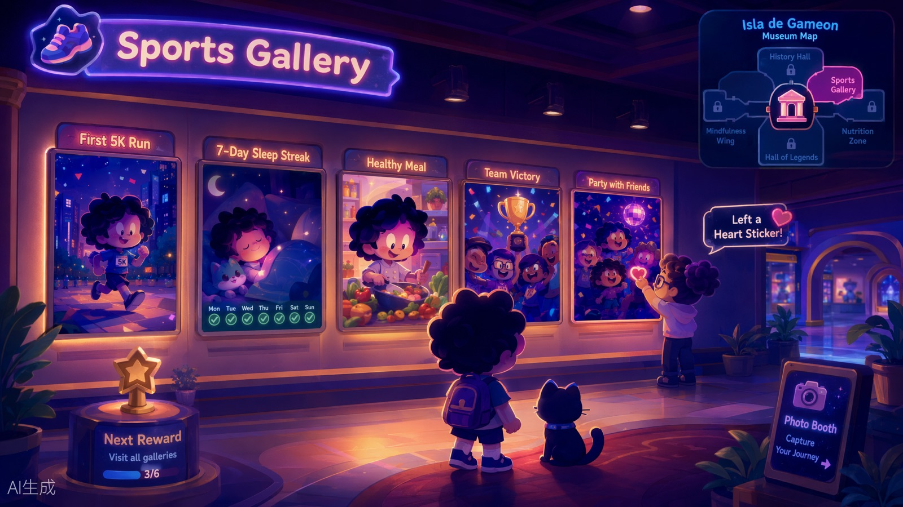

岛不岛 DubDao · 健康 × 社交 × 模拟经营 × AI 原生
你的每一步，
都在海上长出一座岛。
「今天运动，岛不岛？」
健康数据驱动的社交模拟经营游戏：真实的运动、饮食、睡眠、情绪转化为游戏资源，建设你的虚拟岛屿——和朋友互相捣蛋、组球队打联赛、办宴席开演唱会，顺便，真的变健康。
iOS / AndroidAI 原生游戏零 Pay-to-Win真实健康数据强社交半写实 3D 动画电影风

健康数据驱动的社交模拟经营游戏：真实的运动、饮食、睡眠、情绪转化为游戏资源，建设你的虚拟岛屿——和朋友互相捣蛋、组球队打联赛、办宴席开演唱会，顺便，真的变健康。
传统健康 App：记录数据 → 生成报告 → 用户流失。岛不岛：健康行为 → 获得资源 → 建设世界 → 情感连接 + 社交绑定 → 持续健康行为。
捣蛋、派对、球队联赛、演唱会——好玩、有梗、想炫耀。每天打开的理由。
复仇循环、好友岛、聚会碰岛、球队坑位——和朋友绑在一起。第二天回来的理由。
健康风险报告、19 项检测、数据体系——真的变健康，有专业背书。「玩这个不亏」的自我和解。
30 秒就能懂的循环：健康行为产生资源，资源长成看得见的岛，岛把朋友吸引过来，朋友让你明天还想回来。
一天四段情绪曲线，每天 25 分钟就够——这是个劝你放下手机去走路的游戏，时长上涨不是捷报，是警报。
注册即生成你的岛。五分区布局让 19 项健康检测各有归宿——喝水少了，南边的水域真的会干涸。好友的岛在你的地图上浮现，陌生人要坐盲盒航班才能偶遇；中心岛是共享的「市中心」。


出生群系终身固定，是你的资产而不是皮肤：沙漠岛阳光双倍但种菜 −20%——差异是流派，不是惩罚。扩张从 10×10 到 30×30，过渡带自动渐变，地貌可购新地块。
一切从真实行为开始：19 项检测产出颗粒货币与五气，金币建岛炒股，全部有日上限——防肝防通胀，更防"用钱买健康"。

步数/跑步/骑行/力量/游泳自动直读（HealthKit/微信运动/华为），饮水/饮食/情绪轻量手动。每天一张打卡总览卡，确认=岛门关闭（防捣蛋）。

饮食打卡产「碎片」：鸡胸肉→小鸡碎片、时蔬→种子碎片、水果→果树碎片，集 10 片合成去种地养殖。

8 家居民企业上市（咔咔健身、龟龟客栈、树树酒吧、大嘴巡演…），基本面=全服健康行为；做市商定价，三盘结算（8:00/12:30/22:30）。
岛是健康行为的可视化账本，也是最大的社交名片——外部建设给别人看，室内装修给自己住。
10×10 → 30×30 同心圆扩张，37 栋建筑按分区落位（酒吧只能在东区），茅草屋→砖房→城堡三级演进。
小屋可进入：卧室/厨房/书房/健身房角/收藏室，家具网格摆放、染色改色，模板一键抄作业。

食物三来源：自种料理 ★★★ / 商店成品 ★★ / 零食囤货 ★。好友小酌→家宴→流水席，备少了还能 +20% 叫酒吧外卖救场。
可见性=关系深度：好友圈是开车可达的日常，陌生人是要坐飞机的远行。社交是黏合剂——捣蛋让人回来，球队让人不敢走。

好友今天没打卡？岛门大开：涂鸦留言、放臭鼬、偷摘果子（留借据）、给宠物戴搞笑帽子——全部可逆软破坏。

在群岛，熬夜是犯法的。警长梆梆开螃蟹警车上门，DD 憋笑宣读罪状——服刑=做健康任务保释。

足球/篮球/羽毛球/跑团——项目只是皮肤，真实运动数据才是球员：步数→体力、跑步→速度、力量→力量、睡眠→状态。
每天都有一点未知：心情是岛的天气，现实是岛的钟，而居民们——不管你在线不在线，都在过自己的生活。

你操作，岛陪你玩；你不操作，岛自己活。观赏模式=隐藏 UI 的电影镜头，看居民上班、吵架、和好。

每周主题日轮转（鲜市节/夜光跑节/好眠日/放空日/热力周末）；每季节三节：开醒节→护盘战→雾散祭。

NPC 不是功能牌，是慢慢变成朋友的人。每条故事线 3–5 章：陪涂涂把农场做到上市、听龟龟讲面瘫的理由、帮 DD 找回名字。
永远差一点的收集欲 + 你来定义这座岛的创造力——风格一致性由 AI 守护，所以 UGC 才敢开放。

首季 60 张徽章（运动/饮食/睡眠/社交/赛季），每张卡背写着"获得那天的故事"。博物馆=实体化朋友圈。
宠物是你的第二面镜子：你运动它活力满满，你熬夜它第二天没精神——情感驱动自律，比推送狠。
你出草图，AI 翻译成岛不岛风格的标准建筑，模组市场创作者分 30%。群系不同→特产不同→贸易有真实需求。
每个角色都是 agent：有记忆、有性格、有自己的日子。宪法层是硬代码——红线，AI 也不能破。
你的岛灵兼损友：记仇、毒舌、职业性嫌弃熬夜。但翻健康报告时，会戴上面瘫面具切换专业口吻。
报告执笔人，面瘫是他的专业。每月开体检车上门：「坐下，我们谈谈你的睡眠。」
警长开螃蟹警车、消防队长开螃蟹水车。在群岛熬夜是犯法的——但拘留所的床很舒服。
酒吧老板与 DJ，会为一颗椰子冷战三天，再合办一场演出和好。你在不在，他们都这么过。
《岛民日报》主编与博物馆馆长。你的复仇、夺冠、冷场，都可能成为明天的头版。
交易所做市商，在宪法夹取内报价。涨跌停、无杠杆、无做空——规矩是硬代码，AI 也不能破。
写进代码的边界，agent 也无法突破。